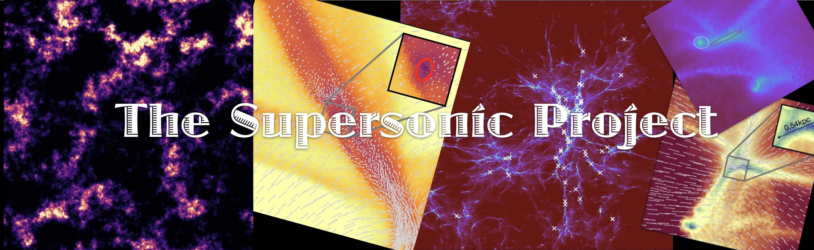

Publications
- Naoz & Narayan (2014) Globular Clusters and Dark Satellite Galaxies through the Stream Velocity
- Popa et al. (2016) Gas-rich and gas-poor structures through the stream velocity effect
- Chiou et al. (2018) The Supersonic Project: rotational effects of supersonic motions on the first structures in the Universe
- Chiou et al. (2018) The Supersonic Project: Shining Light on SIGOs—A New Formation Channel for Globular Clusters
- Chiou et al. (2021) The Supersonic Project: To Cool or Not to Cool Supersonically Induced Gas Objects (SIGOs)?
- Lake et al. (2021) The Supersonic Project: SIGOs, A Proposed Progenitor to Globular Clusters, and Their Connections to Gravitational-wave Anisotropies
- Nakazato et al. (2022) H2 Cooling and Gravitational Collapse of Supersonically Induced Gas Objects
- Lake et al. (2023)The Supersonic Project: The Early Evolutionary Path of SIGOs
- Williams et al. (2023)The Supersonic Project: The Eccentricity and Rotational Support of SIGOs and DM GHOSts
Funding sources